Six étoiles, et surtout : plus aucun crime ne déclenche la police sans témoin ni alarme. La recherche est fondée sur une description, pas sur une position GPS. Voici comment la lire, et comment en sortir.
OFFICIELPRESSE · 18/11PRESSE · 18/11
ILLUSTRATION IA · NON OFFICIEL
OFFICIEL
Aucun crime sans témoin
C'est le changement le plus profond par rapport à GTA V, et il a été énoncé noir sur blanc par Rockstar North.
« Le système de recherche de GTA 6 exige que quelqu'un soit témoin du crime, ou qu'une alarme se déclenche, pour que la police soit prévenue. »OFFICIEL Rob Nelson, co-directeur de Rockstar North, Extended Look du 28/08/2026. POL-01
Ce que ça change
Un crime isolé, sans témoin ni caméra, ne déclenche rien. POL-01
Un PNJ avec un téléphone peut appeler même si vous ne l'avez pas vu — c'est lui qui vous voit.
Fuir avant que l'appel n'aboutisse annule purement et simplement l'étoile.
Ce que ça impose
Repérer les témoins avant d'agir, pas après.
Traiter les caméras comme des témoins permanents.
Préférer les zones peu peuplées pour les préparatifs.
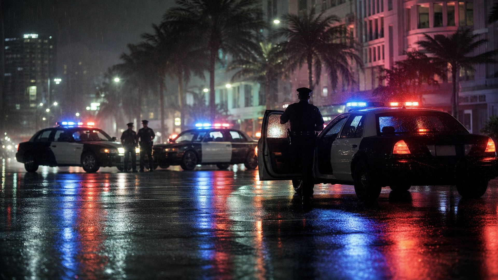
Illustration originale générée par IA (JPG, non officielle) : le barrage, réponse typique à une recherche établie.
Zone masquée par défaut.
Cette page décrit les identifiants diffusés par radio, les contre-mesures et le protocole d'évasion. Rien de tout cela ne révèle un élément d'histoire : il s'agit de système de jeu.
PRESSE · 18/11
Les quatre états d'étoiles
La couleur des étoiles n'est pas décorative : elle indique exactement ce que la police sait de vous à cet instant.
Lecture de la jauge de recherche
État
Signification
Réaction
Réf.
Étoiles creuses
Crime signalé, la police arrive, aucun signalement de votre apparence
Partir avant leur arrivée : ils enquêtent sur les lieux, pas sur vous
POL-03
Blanches pleines
Vous êtes identifié et en ligne de vue
Briser la ligne de vue, pas accélérer
POL-03
Blanches clignotantes
Ligne de vue perdue, recherche depuis la dernière position connue
Rester caché et commencer à effacer les identifiants
POL-03
Rouges
Poursuite terminée, zone chaude encore active avec votre description
Effacer les identifiants puis quitter la zone
POL-03
La zone de recherche s'affiche en rouge sur la minimap, entourée d'un anneau plus clair : sortir des deux est la sortie la plus propre. POL-04
OFFICIEL
Les quatre identifiants et comment les effacer
Sous les étoiles, des icônes listent ce que la police tient sur vous. Chaque icône effacée est une information retirée de la recherche.
Identifiants diffusés et contre-mesures
Identifiant
Comment l'effacer
Réf.
Apparence physique
Changer de coiffure, porter un masque ou un chapeau
POL-02
Vêtements
Changer de tenue complète — un simple accessoire ne suffit pas
POL-02
Véhicule
Abandonner ou changer de voiture, ou repeindre au Pay 'n' Spray
POL-02
Arme
Rengainer l'arme ou s'en débarrasser
POL-02
Vidéosurveillance
Détruire les enregistrements ou retirer la preuve
POL-02
Équipier
Séparer Jason et Lucia — être vu ensemble est un identifiant de plus
POL-09
La caméra-piéton change la donne. Si un agent filme votre visage, le masque ne suffit plus : l'identifiant est déjà enregistré. Masque et casquette servent à empêcher l'enregistrement, pas à le corriger. POL-05
Cacher cinq tenues complètes et l'armurerie dans un coffre est une conséquence directe du système : la tenue de rechange est un outil d'évasion. POL-11
La préparation, en trois objets — un masque, des gants, et la certitude qu'aucune caméra ne voit la plaque. Ce qui reste sur le comptoir après coup compte autant que ce qu'on emporte.
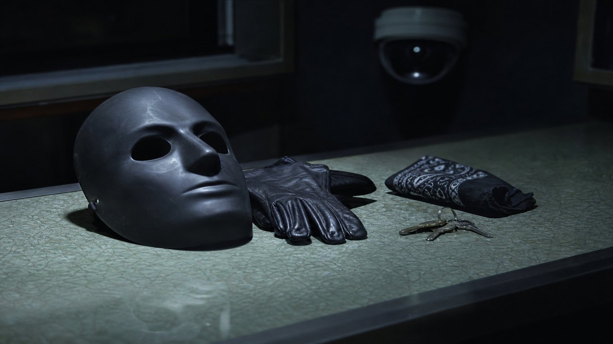
Trois objets, une seule question : qu'est-ce qui reste derrière ? Illustration originale générée par IA (JPG, non officielle). ILLUSTRATION IA
PRESSE · 18/11
Les six preuves que la police accumule contre vous
La police de Leonida ne vous poursuit pas « parce que vous avez tiré » : elle poursuit ce qu'elle peut prouver. Chaque preuve s'annule d'une manière précise, et c'est là que se joue toute l'évasion. POL-35
Six sources d'identification, six réponses
Preuve
Comment elle naît
Comment elle s'annule
Caméra
Vidéosurveillance d'un commerce, d'une rue, d'un parking
Masque intégral, ou sortie hors champ avant l'arrivée des renforts
Témoin
Un passant ou un employé qui vous voit et appelle
Ne pas tirer, sortir vite, éviter les rues fréquentées
Vêtements
La tenue décrite par le témoin ou vue sur la caméra
Se changer : une tenue neuve casse la description
Visage
Reconnaissance faciale quand le masque tombe
Le masque reste en place jusqu'à la fin de la fuite
Arme
Le type d'arme identifié par les douilles ou les témoins
Ranger l'arme, en changer, ou utiliser un modèle discret
Véhicule
La plaque lue, ou le traceur GPS d'une voiture de valeur
Changer de véhicule, éviter les voitures tracées
Le jeu offre un outil pour lire tout cela en direct : le Focus Mode, qui met en évidence les agents à travers les murs, et l'affichage des icônes de reconnaissance en haut de l'écran pendant une poursuite. Autrement dit, l'évasion n'est pas une course : c'est une soustraction. PRESSE · 18/11
Ce qui marche vraiment
Un véhicule banal, volé loin du lieu du délit, et changé une seconde fois.
Entrer dans un bâtiment puis ressortir par une autre sortie.
Se changer avant de reprendre la route.
Couper les sirènes qui vous suivent en cassant la ligne de vue, pas en accélérant.
Ce qui ne marche pas
Rouler vite en ligne droite : les hélicoptères n'ont pas de bouchons.
Garder la voiture du braquage « parce qu'elle est rapide ».
Tirer sur les témoins : chaque silhouette supplémentaire ajoute une preuve.
Revenir sur les lieux avant la fin de la recherche.
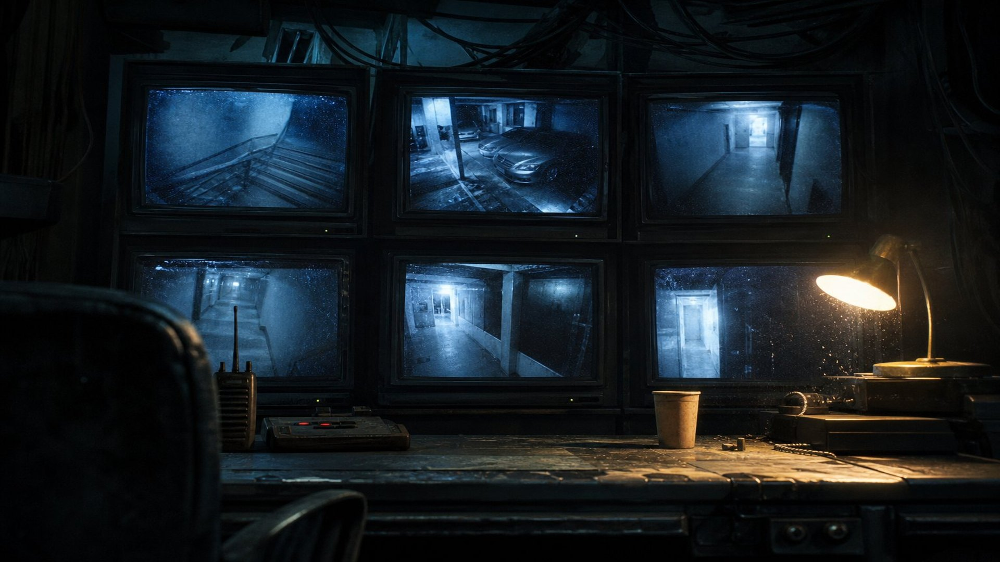
Ce qu'ils voient de vous, écran par écran. Illustration originale générée par IA (JPG, non officielle). ILLUSTRATION IA
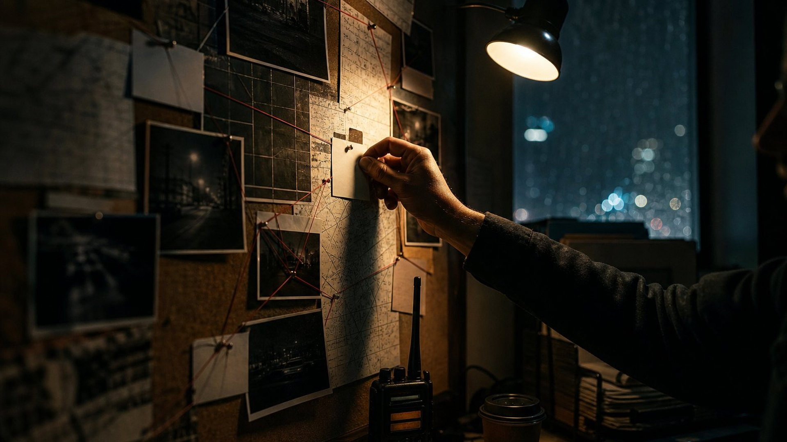
Côté police, votre profil criminel se construit exactement comme ça : par accumulation. ILLUSTRATION IA
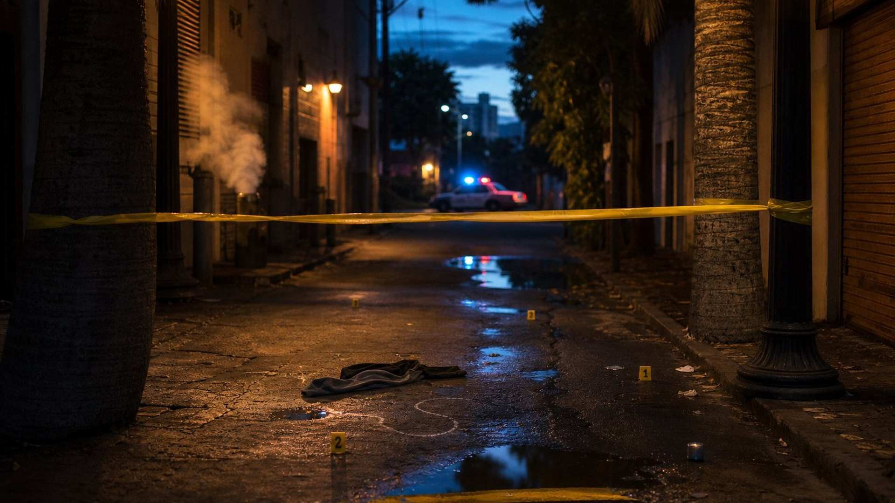
Chaque objet laissé derrière vous entre dans la fiche d'identification. ILLUSTRATION IA
PRESSE · 18/11
Escalade : de la patrouille à l'armée
POL-061 étoile — patrouilles qui cherchent quelqu'un correspondant à la description.
POL-062 étoiles — réponse élargie, encore non létale : la reddition reste possible et coûte une amende plutôt qu'une course.
POL-063 étoiles — unités cynophiles : les chiens suivent à travers les herbes hautes, derrière une benne, là où un agent humain perd la piste. Se cacher et attendre ne fonctionne plus.
POL-064 et 5 étoiles — SWAT et hélicoptère : les hélicoptères doivent rentrer se ravitailler, ce qui ouvre des fenêtres. À 5 étoiles, unités lourdement armées et hélicoptères d'attaque.
POL-066 étoiles — réponse militaire et chasse à l'échelle de l'État.
POL-12Rappel de terrain : à partir de 3 étoiles, abandonner la voiture et continuer à pied dans les ruelles bat une course poursuite coordonnée.
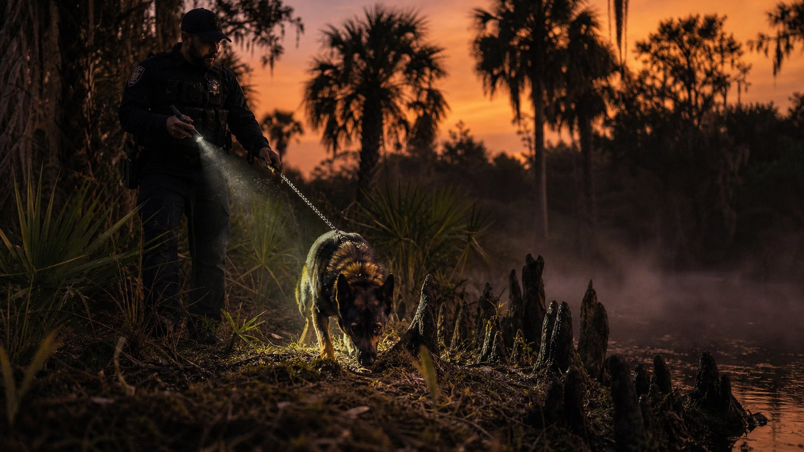
3 étoiles — le chien
Il rend la cachette statique inutile. Il faut de la distance et un obstacle, pas un buisson.
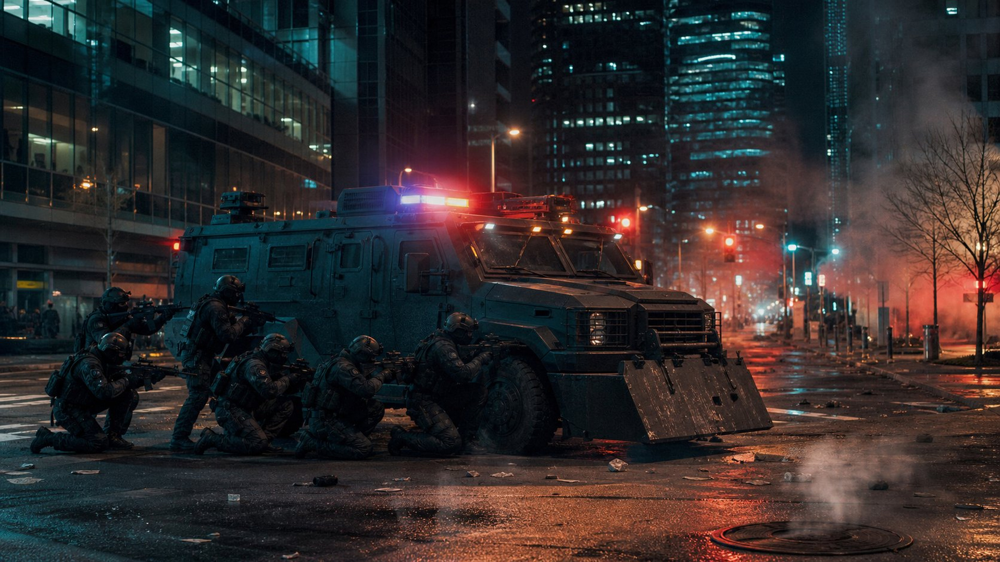
4-5 étoiles — le dispositif
Le blindé ferme la rue, l'hélicoptère ferme le ciel. Le seul chemin restant est souvent vertical ou couvert.
PRESSE · 18/11
Être identifié : le vrai interrupteur du système
La police de Leonida ne compte pas seulement les étoiles : elle sait qui vous êtes. Caméras, témoins, plaques lues : c'est l'identification qui transforme un braquage en affaire personnelle, et le masque qui l'empêche. POL-33
Ce qui vous fait identifier
Les caméras de surveillance, nombreuses dans les commerces et les rues marchandes.
Les témoins directs, surtout dans un commerce sans deuxième sortie.
Le véhicule : une voiture volée repérée relie l'infraction à vous.
Le retour sur les lieux, ou la récidive dans le même quartier.
Ce qui vous protège
Un masque : il empêche l'identification, pas l'alerte.
Désarmer l'alarme avant de frapper — le bruit attire.
Sortir sans tirer : la fuite discrète vaut mieux que le corps-à-corps.
Changer de véhicule vite, et loin des caméras.
La bonne question avant un braquage n'est donc pas « combien il y a en caisse » mais « combien de témoins et de caméras ». Rob Nelson a montré l'exemple inverse en préparation presse : entrer dans une banque, compter les gardes, ressortir sans rien tenter. Un braquage refusé coûte zéro. POL-34
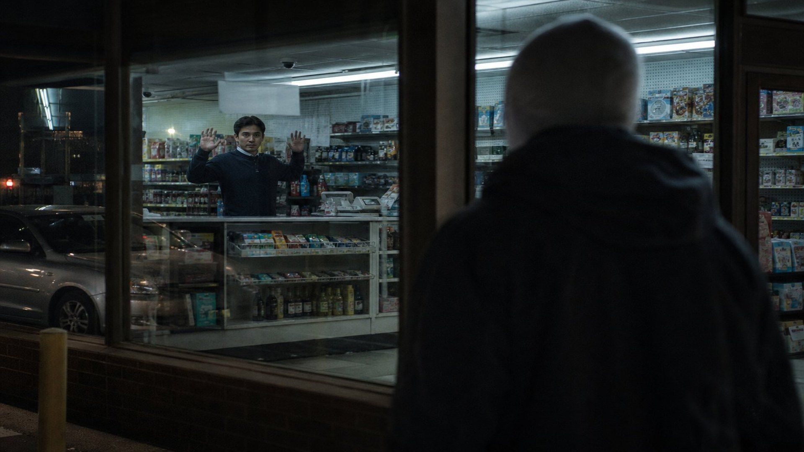
Vitre, caméra, témoin : trois raisons de renoncer. Illustration originale générée par IA (JPG, non officielle). ILLUSTRATION IA
PRESSE · 18/11
Le contre-jeu : invalider le signalement plutôt que le poursuivre
La réflexe de GTA V — casser la ligne de vue, sortir du cercle, attendre — ne suffit plus. À Leonida, la poursuite s'arrête quand la fiche d'identification devient inutile, pas quand vous êtes hors de vue. La presse du 18 novembre décrit exactement ce que chaque geste efface, et ce qu'il n'efface pas.
Ce qu'un geste efface vraiment
Geste
Effet réel
Erreur classique
Coiffeur / nouvelle coupe
Efface le signalement physique (icône silhouette).
Croire qu'une casquette ou des lunettes suffisent : la presse précise qu'il faut un changement réel du visage. POL-36
Changer un seul accessoire : l'icône reste allumée. POL-37
Masque pendant le crime
Empêche la police d'obtenir le visage, en amont.
Le mettre après : si un agent a filmé votre visage, le masque ne corrige plus rien. POL-05
Changement de véhicule
Efface l'identifiant véhicule — décisif si la voiture est « connue ».
Repeindre puis repartir dans la même caisse : la presse recommande de changer, pas seulement de repeindre. POL-38
Séparation Jason / Lucia
Brouille l'identifiant « duo » : le couple signalé n'existe plus.
Rester à deux « pour se protéger » pendant une traque : c'est l'inverse. POL-09
Rester dans le quartier
Rien : les zones chaudes restent actives après le crime.
Revenir sur place quelques minutes plus tard pour récupérer un véhicule. POL-36
Ralentir vaut mieux que tuer
Abattre un agent ajoute une preuve et fait monter l'escalade ; le blesser ou le bloquer suffit à gagner les secondes nécessaires pour sortir de la zone. Le profil criminel juge la méthode, pas seulement le butin : un braquage propre reste préférable à une fusillade. POL-36
La tenue de rechange est un outil
Les véhicules personnels peuvent stocker des vêtements de rechange. C'est la raison pratique pour laquelle le coffre compte autant que l'armurerie : une tenue complète à portée de main annule un identifiant en quelques secondes. POL-38
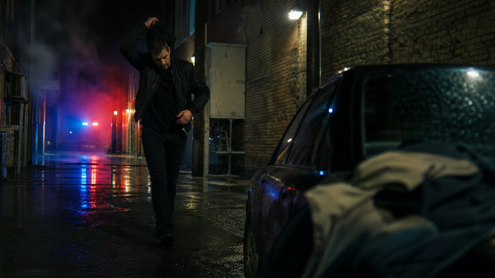
Le masque protège tant qu'il est porté avant le crime ; après une caméra, il ne sert plus à rien. ILLUSTRATION IA
Le test des icônes. Regardez sous les étoiles avant de fuir : chaque pictogramme encore allumé pendant la poursuite signifie que la police continue de vous chercher après. Une évasion réussie se mesure à une barre vide, pas à un écran sans gyrophare. POL-37
PRESSE · 18/11
Protocole d'évasion, étape par étape
Briser la ligne de vue — virage à angle droit, ruelle, parking couvert, bâtiment traversant. Accélérer en ligne droite ne casse rien. POL-07
Changer de véhicule — une berline banale et commune casse immédiatement l'identifiant véhicule. POL-07
Changer de tenue — à 1 et 2 étoiles, c'est la méthode la plus fiable : la description ne correspond plus à personne. POL-07
Brouiller la trace — le brouilleur de traceur de l'emplacement d'équipement gêne le suivi GPS, surtout à 4 et 5 étoiles sous hélicoptère. POL-07
Se séparer — séparer Jason et Lucia retire l'identifiant « duo ». POL-09
Sortir de la zone rouge puis de l'anneau — et rouler normalement : conduire comme un fou pendant la recherche attire l'œil. POL-04
Déposer l'argent — une fois la recherche retombée, le liquide reste perdable jusqu'au distributeur. Voir Économie
À 3 étoiles et plus, l'ordre change. Il faut d'abord créer de la distance, puis casser la ligne de vue, puis se cacher. L'inverse ne fonctionne pas : le chien vous retrouve.
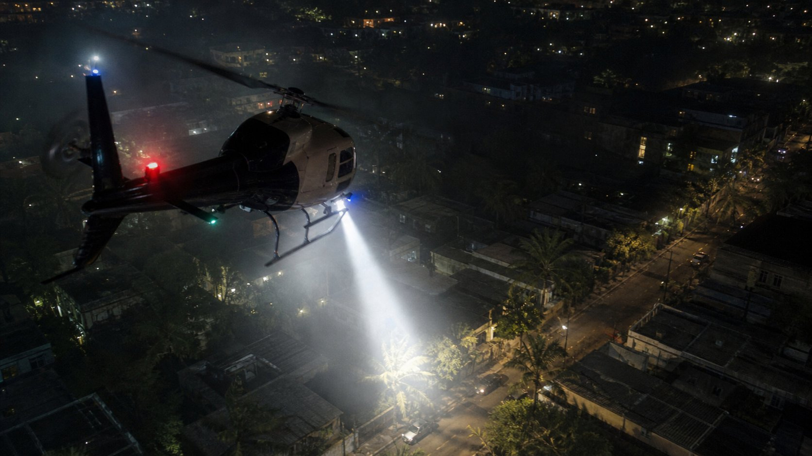
Illustration originale (non officielle) : le projecteur rend le toit plus dangereux que la rue.
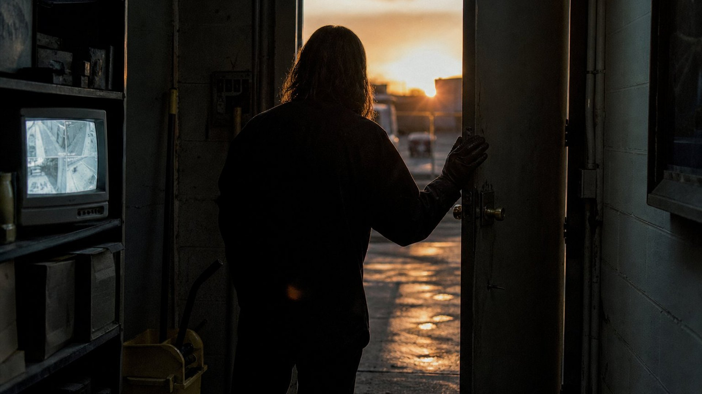
Une sortie discrète vaut mieux qu'une course : c'est le trajet qui décide de la fiche d'identification. ILLUSTRATION IA
PRESSE · 19/11
Reconnaître avant d'entrer : les gestes vérifiés
Les joueurs qui ont le plus d'heures ne jouent pas mieux : ils préparent. Quatre gestes, tous reproductibles, qui réduisent la poursuite avant même le premier coup de feu.
La police n'est plus sur la carte
Le Focus la surligne en bleu à travers les murs, et un témoin rouge et bleu en bord d'écran indique d'où vient la réponse. Les étoiles ont quatre états : pleines (vue directe), clignotantes (repères perdus), creuses (aucune description), rouges (chaleur persistante). POL-39
Baliser les gardes sans les alerter
Entrer en client, verrouiller un garde comme pour lui parler, appuyer à droite sur la croix : une flèche apparaît au-dessus de sa tête. On garde sa position pendant tout le braquage. POL-42
Alarme d'abord, caméras ensuite
Le panneau d'alarme est blanc, souvent en réserve, et ressort en Focus. Les caméras aussi — mais les abattre exige un silencieux, sinon il faut effacer la preuve depuis la salle de sécurité. POL-41
Parler plutôt que tirer
À une étoile, ranger l'arme et maintenir la gâchette gauche sur l'agent ouvre « désamorcer » ou « provoquer ». Le jeu compte les crimes sans victime : la désescalade n'est pas une perte de temps, c'est un choix de progression. POL-40
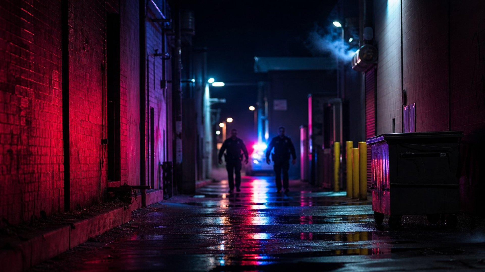
Deux silhouettes dans une ruelle : le Focus les montre avant qu'elles ne vous voient. ILLUSTRATION IA
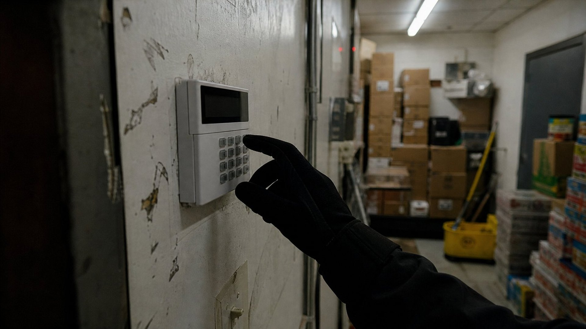
Le panneau blanc en réserve : trois secondes qui évitent quinze minutes de poursuite. ILLUSTRATION IA
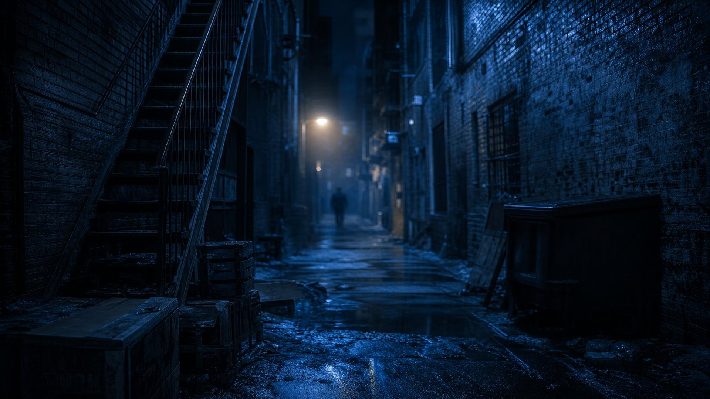
Lire la ruelle avant d'y entrer : c'est exactement ce que fait le Focus Mode. Illustration originale générée par IA (JPG, non officielle). ILLUSTRATION IA
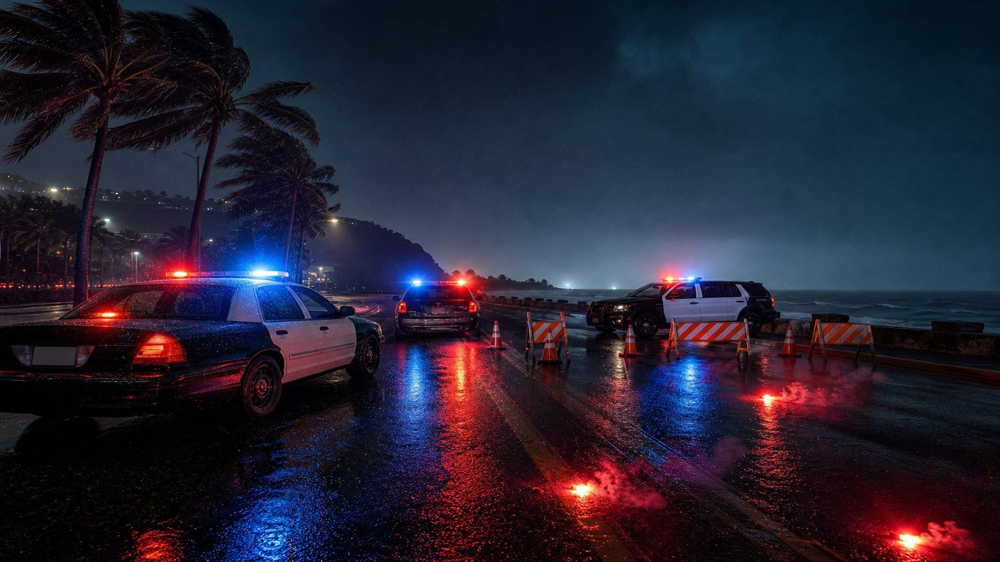
Le barrage : la seule fois où accélérer est le mauvais choix. Illustration originale générée par IA (JPG, non officielle). ILLUSTRATION IA